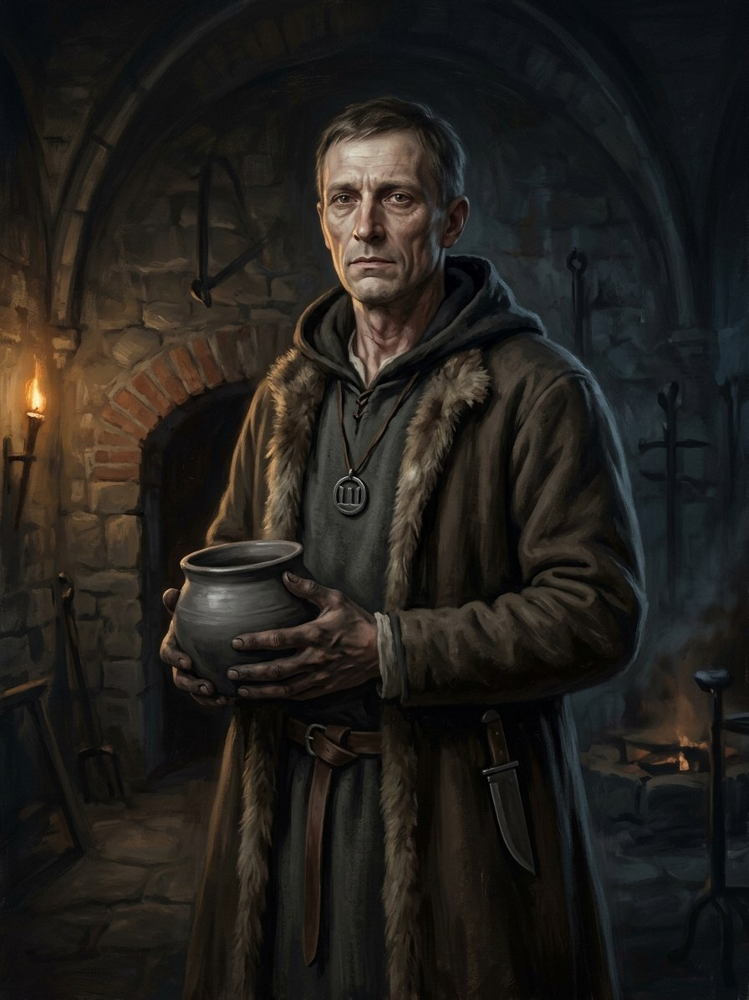

The Flame-Keeper (Book V POV)¶
Summary¶
Žiežirba, the Flame-Keeper (Book V’s point-of-view character, b. c. 1390), raised in the Trakai vault as the flame’s guard. After the flame goes out in 1430 he wanders with the silver wolf and the cracked pebble; on 12 Dec 1449, the longest night by the drifted calendar, he reaches Palanga and is named at a driftwood fire; he dies in early March 1450 and is cremated on the beach (Book V ch. 29).
Žiežirba (the Flame-Keeper, Book V POV)

Žiežirba (the Flame-Keeper, Book V POV) · character¶
Tipas |
veikėjas |
Metai |
c. 1390–1450 |
Status |
Sagos išmonė |
Pastaba |
Working skin-name Žiežirba. Born c. Oct 1390-Mar 1391: about 5 in winter 1395-96 (Book II ch. 14), 8-9 in 1399, 14 and nearly 15 at Kūčios 1405 (Book III ch. 9), 48 in 1438. Tends the vault flame as a boy from 1399 (Kalvis’s ash, Book II ch. 29) and is sworn into the wolves at Kūčios 1405: the one wolf named below the usual age of 16. Arrives at Palanga on 12 Dec 1449 (the longest night, by the drifted calendar) and is named that night; dies in early March 1450; cremated on the beach (Book V ch. 29). |
Appearance & tells¶
Lean and pale from years underground, with smoke-darkened hands and a throat-mark from the wolf-christening (krikštas); he carries the ash-pot, the wolves‘ most important office after 1387. After 27 Oct 1430 he is a „keeper without a flame“: the throat-scar, the empty pot, cold skin, and nights in byres (Book V). He wears the silver wolf and carries Birutė’s cracked pebble. His tells follow the quarrel between flame and name: the vault’s cold keeps him from sleeping on the bench Vytautas built; the lightning-fire from Perkūnas’s storm burns, but „keeps no names“ (ch. 2). In his last winter, at Palanga, he ages his forty-five sworn years in a single season, weeps for the first time and dies.
Want · Need · Lie · Truth¶
Want (external) |
To relight the Last Flame after Vytautas’s death, and so to keep the Pact’s wolves alive. |
Need (internal) |
To let the gods become stories: to stop trying to hold up something a people never knew it had sworn. |
Lie they believe |
That the flame can be relit if one man is faithful enough; that the Pact belongs to its keepers. |
Truth they learn (or refuse) |
The Pact cannot be re-sworn by one man, and the people were never asked (Book V ch. 5, 20); the land remembers, and the sea remembers a name the dead flame let go (ch. 29). |
Arc by book¶
Book II (1390s): a five-year-old pulled from a cold house in an Unbinding hunt at Šermukšniai (ch. 14, winter 1395-96) and taken to the Trakai vault.
Book III (1405-1411): sworn at fifteen in the twelve nights after Kūčios, 1405-06, whispering his true name into the secret flame and taking his skin-name Žiežirba („Spark“) on the Iron Wolf’s skull (ch. 9); carries the flame out of the vault in a horn lantern across the Vistula bridge and to Grunwald (ch. 15, 20, 21); feeds it again at the vault on his return (ch. 28).
Book IV (1430): the vault’s keeper to the end; Vytautas spends his bought week on him, arranging that the pebble and silver wolf go to him through Pilkoji (ch. 28, 29).
Book V (1430-1450): POV. He sees the flame die as Vytautas dies (ch. 1); carries away Perkūnas’s lightning-fire (ch. 2); learns that the Pact had three parties (ch. 5); takes the silver wolf and pebble from Pilkoji (ch. 7); refuses to light the flame for Žygimantas (ch. 8-10, 18-19), tries to relight the Pact in the cathedral crypt and nothing answers (ch. 20), refuses Henė’s last deal (ch. 24), watches the last žynys die (ch. 27) and Pilkoji lie down in the bog (ch. 28), and is named at Palanga by the Amber Queen through the pebble (ch. 29, 12 Dec 1449). He dies in early March 1450 and is cremated on the beach.
Power & magic¶
Granted, not born: the Wolf-Change from the Root-Mother via the Dykra, sworn in December 1405, and Ženklai (signs, tier 2; zenklai). He sits outside the tier ladder: wolves are not casters. Artifacts: Kęstutis’s silver wolf and Birutė’s pebble, both from Pilkoji at Kūčios 1430, and the Šventaragis ember, whose ash he feeds from Kalvis’s remains. A wolf sworn twenty years or more may take wolf shape; after the flame goes out new wolves cannot be made. The cost is that he is the last sworn wolf, a name without a flame.
Record vs saga¶
[Historical record]: No such person in the record.
[The saga’s invention]: All of him. Dates: arrival at Palanga 12 Dec 1449; death early March 1450.
Tarimas¶
Derived from the Lithuanian žiežirba („spark“): ŽIE-žir-ba (/ˈʒʲiɛʒʲɪrbɐ/), English sound-alike ZHYEH-zhir-bah; stress on the first syllable. Skin-name = kailio vardas.
Appearances¶
Book II: ch. 14 (Vilkų Medžioklė), 29 and the afterword. Book III: ch. 2, 9 (the Wolves‘ Baptism, POV), 15 (the Bridge over the Vistula, POV), 17, 20, 21, 28. Book IV: ch. 1, 3, 16, 17, 22, 25, 27, 28, 29. Book V: the point-of-view character: ch. 1, 2, 4, 7, 8, 9, 10, 11, 13, 16, 18-22, 24, 27-29 (the others are told by Birutė, Pilkoji, Žygimantas, Casimir). Born c. 1391 (14 at Kūčios 1405); Pilkoji, born c. 1365, fosters him.
Ryšiai
Ally: Kirmėlė / Worm (the Old Tracker) (1395–1435) — Rescues Spark as a child in winter 1395-96 and watches over his upbringing.
Holds: Motinos gintaras (Birutė’s pebble) (1431–1450) — From Pilkoji, Kūčios 1430; cracked. · Sidabrinis vilkas (Kęstutis’s amulet) (1431–1450) — From Pilkoji at Kūčios (24 Dec) 1430, i.e. the winter of 1430-31.
Keeps: Paskutinė žarija (Šventaragis ember) (1399–1430) — A boy tending the vault flame from 1399 (Book II ch. 29); sworn wolf from Kūčios 1405. Feeds the flame from Kalvis’s ash; carries the lantern in 1410. · The Last Flame promise (1410–1430) — Keeper and witness of the flame’s going out.
Member of: Vilkatai (Iron Wolves) (1405–…)
Practises: Vilkų krikštas (wolf-change) (1405–…) — tier 3 · Ženklai (signs) (1410–…) — tier 2
Protagonist of: V · The Wolf’s Legacy
Took part in: The keeper is named at the Palanga fire · Vytautas dies at Trakai; the Last Flame goes out — Witness of the flame going out. · Žiežirba dies; cremated on the beach
Chronologija¶
Year |
Event |
Book |
|---|---|---|
1430-10-27 |
IV · Nematoma Karūna |
|
1449-12-12 |
V · Vilko Palikimas |
|
1450-03 |
V · Vilko Palikimas |
Sąsajos¶
graph LR
book5["V · The Wolf's Legacy"]
ember["Paskutinė žarija (Šventaragis ember)"]
ev_keeper_dies["Žiežirba dies; cremated on the beach"]
ev_vytautas_dies["Vytautas dies at Trakai; the Last Flame goes out"]
ev_ziezirba_named["The keeper is named at the Palanga fire"]
flame_keeper["Žiežirba (the Flame-Keeper, Book V POV)"]
flame_promise["The Last Flame promise"]
iron_wolves["Vilkatai (Iron Wolves)"]
kirmele["Kirmėlė / Worm (the Old Tracker)"]
pebble["Motinos gintaras (Birutė's pebble)"]
silver_wolf["Sidabrinis vilkas (Kęstutis's amulet)"]
wolf_change["Vilkų krikštas (wolf-change)"]
zenklai["Ženklai (signs)"]
flame_keeper -->|Member of| iron_wolves
flame_keeper -->|Practises| wolf_change
flame_keeper -->|Practises| zenklai
flame_keeper -->|Holds| pebble
flame_keeper -->|Holds| silver_wolf
flame_keeper -->|Protagonist of| book5
flame_keeper -->|Took part in| ev_vytautas_dies
flame_keeper -->|Keeps| ember
flame_keeper -->|Keeps| flame_promise
flame_keeper -->|Took part in| ev_ziezirba_named
flame_keeper -->|Took part in| ev_keeper_dies
kirmele -->|Ally| flame_keeper
style flame_keeper stroke-width:3px